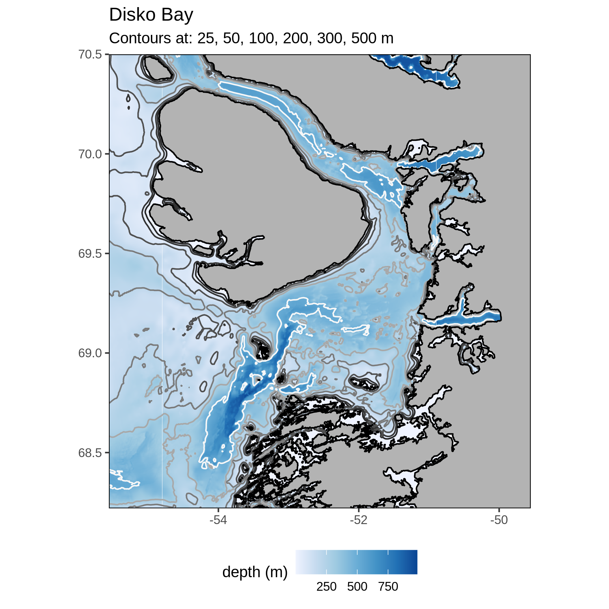

Species data
Eva-Carmen Calin
17 mai 2023
Last updated: 2023-05-17
Checks: 6 1
Knit directory: WP1/
This reproducible R Markdown analysis was created with workflowr (version 1.7.0). The Checks tab describes the reproducibility checks that were applied when the results were created. The Past versions tab lists the development history.
The R Markdown file has unstaged changes. To know which version of
the R Markdown file created these results, you’ll want to first commit
it to the Git repo. If you’re still working on the analysis, you can
ignore this warning. When you’re finished, you can run
wflow_publish to commit the R Markdown file and build the
HTML.
Great job! The global environment was empty. Objects defined in the global environment can affect the analysis in your R Markdown file in unknown ways. For reproduciblity it’s best to always run the code in an empty environment.
The command set.seed(20210216) was run prior to running
the code in the R Markdown file. Setting a seed ensures that any results
that rely on randomness, e.g. subsampling or permutations, are
reproducible.
Great job! Recording the operating system, R version, and package versions is critical for reproducibility.
Nice! There were no cached chunks for this analysis, so you can be confident that you successfully produced the results during this run.
Great job! Using relative paths to the files within your workflowr project makes it easier to run your code on other machines.
Great! You are using Git for version control. Tracking code development and connecting the code version to the results is critical for reproducibility.
The results in this page were generated with repository version 29107e6. See the Past versions tab to see a history of the changes made to the R Markdown and HTML files.
Note that you need to be careful to ensure that all relevant files for
the analysis have been committed to Git prior to generating the results
(you can use wflow_publish or
wflow_git_commit). workflowr only checks the R Markdown
file, but you know if there are other scripts or data files that it
depends on. Below is the status of the Git repository when the results
were generated:
Ignored files:
Ignored: .Rhistory
Ignored: .Rproj.user/
Ignored: users/calin/.Rhistory
Ignored: users/calin/data/
Ignored: users/calin/metadata/
Untracked files:
Untracked: analysis/docs/assets/species_nomenclature_naming_variable.PNG
Untracked: users/calin/figures/ECC_data01_barents.png
Untracked: users/calin/figures/ECC_data01_is.png
Untracked: users/calin/figures/ECC_data01_nuup.png
Unstaged changes:
Modified: analysis/species_data.Rmd
Modified: users/calin/figures/ECC_data01.png
Modified: users/calin/figures/ECC_data02.png
Modified: users/calin/figures/ECC_data03.png
Modified: users/calin/figures/ECC_data05.png
Modified: users/calin/figures/ECC_data06.png
Modified: users/calin/figures/ECC_data07.png
Modified: users/calin/figures/ECC_data08.png
Note that any generated files, e.g. HTML, png, CSS, etc., are not included in this status report because it is ok for generated content to have uncommitted changes.
These are the previous versions of the repository in which changes were
made to the R Markdown (analysis/species_data.Rmd) and HTML
(docs/species_data.html) files. If you’ve configured a
remote Git repository (see ?wflow_git_remote), click on the
hyperlinks in the table below to view the files as they were in that
past version.
| File | Version | Author | Date | Message |
|---|---|---|---|---|
| Rmd | 29107e6 | Eccalin | 2023-05-16 | data species |
| html | 29107e6 | Eccalin | 2023-05-16 | data species |
| html | d73422a | Eccalin | 2023-05-16 | Poster |
| html | 73cd309 | Eccalin | 2023-05-12 | Build site. |
| Rmd | cfa3aca | Eccalin | 2023-05-12 | web site test |
| html | cfa3aca | Eccalin | 2023-05-12 | web site test |
| Rmd | 4ce558b | Eccalin | 2023-05-12 | Web site |
| html | 4ce558b | Eccalin | 2023-05-12 | Web site |
Overview
This document outlines the process of collecting, amalgamating, and
analyzing species presence data from the FACE-IT Arctic Fjords study
sites.
Methods
Determine which data is needed, what are the selection criteria?
To meet the requirements of the FACE-IT project, the data must meet
certain criteria. The data must be from one of the seven study sites of
the project, in Svalbard, Greenland or Norway. Data must include species
biomass (presence data will also be collected). The data must concern
marine species such as birds, fish, mammals, zooplankton or
phytoplankton.
Searching for sources
To ensure data quality, it is essential to have reliable sources. For
this, research and academic sites were used, in particular those of
MOSJ, GEM, NPI.
Data collection and identification
Once the sources are found, it is important to collect the datasets
that can be used for the project. Sometimes it is necessary to log in to
certain websites to access the data. In order to use this data to its
highest potential, it is important to determine what useful and
necessary information in each dataset should be preserved. Careful
consideration must be given to each set to ensure the quality of the
information.
Modeling the sets
The data collected will be added to the ones already present on the FACE-IT project, they will have to follow the same format and respect the order by filling the following columns:
the date of access to the data,
the URL where to find the set,
the citation,
the type of data,
the site (kong, nuup, svalbard, is, disko, …),
the category (bio, cryo, social, …),
the driver (category details.) ),
the variable,
the longitude of each data,
the latitude of each data,
the date of collection of the data,
the depth of water of each data,
the value
Variable naming
All the variables follow a precise naming system. This allows to save their main information. For each variable we find:

##### Species type code
For an easier use, the different species studied have been divided in several categories each distinguished by a three letters code: Birds, Poisons |FIS|, Marine mammal |MAM|, Zooplankton |ZOO| and Phytoplankton |PHY|.
For the birds, subcategories have been added. The goal of the project being the study of marine species and the data collected concerning different types of birds. A distinction was made between marine birds |SBI|, land birds (non marine) |NBI| and species not yet sorted |BIR|.
Assembling the sets
Once the data are formatted, they are combined by geographic area, saved and added to the website.
Analyze the sets
Once the sets are complete, an analysis of the data recovered can be
made. This allows us to see the information collected and to highlight
certain patterns.
Svalbard
── Attaching core tidyverse packages ──────────────────────── tidyverse 2.0.0 ──
✔ dplyr 1.1.1 ✔ readr 2.1.4
✔ forcats 1.0.0 ✔ stringr 1.5.0
✔ ggplot2 3.4.2 ✔ tibble 3.2.1
✔ lubridate 1.9.2 ✔ tidyr 1.3.0
✔ purrr 1.0.1
── Conflicts ────────────────────────────────────────── tidyverse_conflicts() ──
✖ dplyr::filter() masks stats::filter()
✖ dplyr::lag() masks stats::lag()
ℹ Use the conflicted package (<http://conflicted.r-lib.org/>) to force all conflicts to become errors
sessionInfo()R version 4.2.3 (2023-03-15 ucrt)
Platform: x86_64-w64-mingw32/x64 (64-bit)
Running under: Windows 10 x64 (build 19045)
Matrix products: default
locale:
[1] LC_COLLATE=French_France.utf8 LC_CTYPE=French_France.utf8
[3] LC_MONETARY=French_France.utf8 LC_NUMERIC=C
[5] LC_TIME=French_France.utf8
attached base packages:
[1] stats graphics grDevices utils datasets methods base
other attached packages:
[1] lubridate_1.9.2 forcats_1.0.0 stringr_1.5.0 dplyr_1.1.1
[5] purrr_1.0.1 readr_2.1.4 tidyr_1.3.0 tibble_3.2.1
[9] ggplot2_3.4.2 tidyverse_2.0.0
loaded via a namespace (and not attached):
[1] tidyselect_1.2.0 xfun_0.38 bslib_0.4.2 colorspace_2.1-0
[5] vctrs_0.6.1 generics_0.1.3 htmltools_0.5.5 yaml_2.3.7
[9] utf8_1.2.3 rlang_1.1.0 jquerylib_0.1.4 later_1.3.0
[13] pillar_1.9.0 glue_1.6.2 withr_2.5.0 lifecycle_1.0.3
[17] munsell_0.5.0 gtable_0.3.3 workflowr_1.7.0 evaluate_0.20
[21] knitr_1.42 tzdb_0.3.0 fastmap_1.1.1 httpuv_1.6.9
[25] fansi_1.0.4 Rcpp_1.0.10 promises_1.2.0.1 scales_1.2.1
[29] cachem_1.0.7 jsonlite_1.8.4 fs_1.6.1 hms_1.1.3
[33] digest_0.6.31 stringi_1.7.12 rprojroot_2.0.3 grid_4.2.3
[37] cli_3.6.1 tools_4.2.3 magrittr_2.0.3 sass_0.4.5
[41] whisker_0.4.1 pkgconfig_2.0.3 timechange_0.2.0 rmarkdown_2.21
[45] rstudioapi_0.14 R6_2.5.1 git2r_0.32.0 compiler_4.2.3